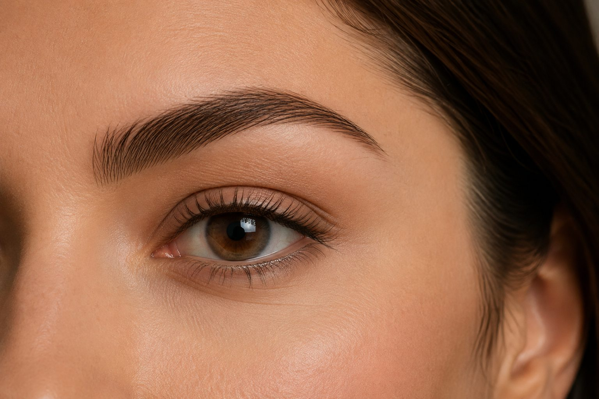
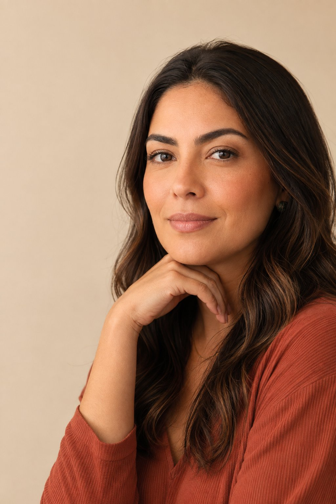
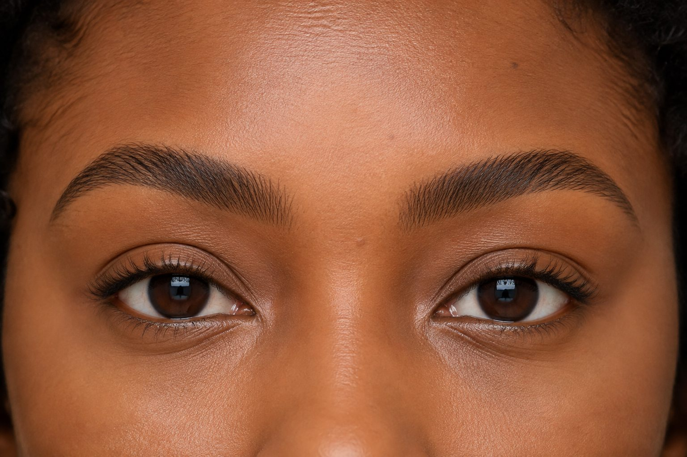
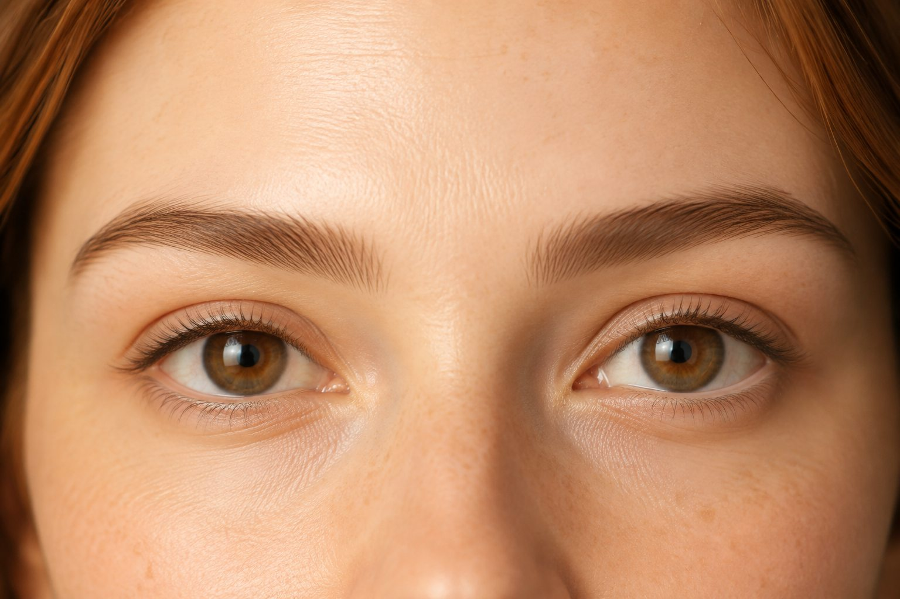
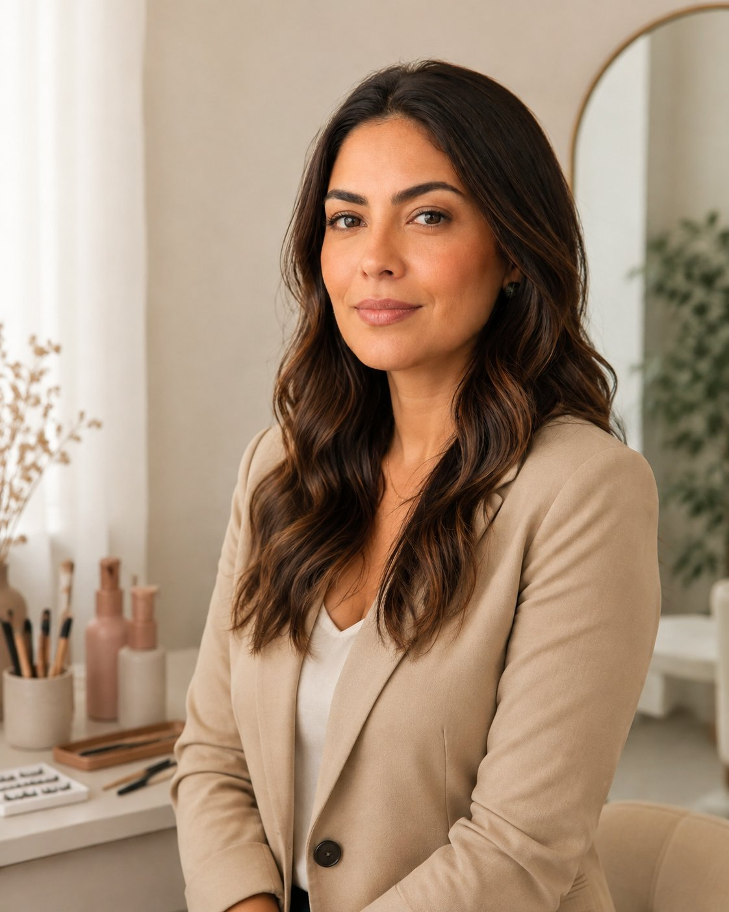

01
Design de Sobrancelhas
Harmonização do formato ideal para o seu rosto, respeitando seus traços.
Quero agendarMicropigmentação & Design de sobrancelhas
Micropigmentação, Design de sobrancelhas e cuidados personalizados para realçar o que torna você única.

Mais que sobrancelhas:
confiança para se reconhecer.
Cuidado em cada detalhe
Escolhas personalizadas para um resultado leve, harmônico e fiel à sua expressão.

Harmonização do formato ideal para o seu rosto, respeitando seus traços.
Quero agendar
Resultado delicado e duradouro com técnica escolhida para a sua pele.
Quero agendar
Cuidados para preservar o formato, a cor e a definição por mais tempo.
Quero agendarNaturalidade que se percebe
Veja como pequenos detalhes podem transformar a expressão sem apagar a identidade de cada mulher.
Conteúdo demonstrativo: as imagens abaixo são ilustrativas e devem ser substituídas por casos reais.
Design personalizado
Micropigmentação suave
Retoque delicado

Foto ilustrativaQuem vai cuidar de você
Olá, eu sou a Bruna! Especialista em micropigmentação e design de sobrancelhas. Meu propósito é realçar a beleza de forma personalizada, respeitando as características e o gosto pessoal de cada cliente. Acredito que sobrancelhas bonitas não são aquelas que simplesmente seguem a moda ou a tendência do momento, mas aquelas que fazem sentido para você. Meu trabalho é encontrar, dentro do que é possível para cada sobrancelha, um design que valorize o seu rosto e que faça você se sentir confortável e bem com a sua própria imagem.
Histórias de autoestima
Depoimentos fictícios para demonstrar a apresentação da prova social.
“Meu olhar mudou e o resultado ficou muito natural. O atendimento foi cuidadoso do começo ao fim.”
“A Bruna explicou cada etapa e entendeu exatamente o que eu queria: definição sem perder a leveza.”
“Ambiente acolhedor, atendimento pontual e um resultado que combina comigo. Saí muito feliz.”
Antes do seu atendimento
Informações iniciais para você chegar tranquila e segura à sua escolha.
Ainda tenho uma dúvidaNossa técnica é atual e sofisticada, e o resultado é definido de acordo com o seu estilo e a intensidade que você deseja. Durante a avaliação, você escolhe o tom e o efeito que deseja, mais natural ou mais marcado. Nada é feito sem que você saiba e aprove previamente. Tudo é planejado junto com você para que o resultado fique do seu agrado e respeite a sua identidade.
Sim, se esse for o resultado que você deseja. Nossa técnica de sombreamento é atual e sofisticada e permite personalizar o tom e a intensidade do esfumado. Durante a avaliação, você define junto conosco o efeito que deseja: mais natural e delicado ou mais definido e marcante. Tudo é pensado de acordo com o seu estilo e do jeito que você escolher.
Sim. A avaliação faz parte do processo e é essencial para definirmos todos os detalhes do seu procedimento. Nesse momento, conversamos sobre o resultado que você deseja e avaliamos seus traços para definir juntos o formato, o tom e a intensidade da micropigmentação. Também fazemos uma simulação detalhada para que você consiga visualizar como ficará o resultado antes de agendarmos a micropigmentação. Tudo é explicado e alinhado com você previamente. Nada é feito sem que você saiba e esteja de acordo.
Depende de como está a sua micropigmentação atual. Antes de realizar qualquer procedimento, avaliamos cuidadosamente a cor, a intensidade, o formato e a condição da pele para entender o que é possível fazer com segurança e qual será a melhor estratégia para o seu caso. Em algumas situações, é possível realizar um novo procedimento. Em outras, pode ser necessário um processo de neutralização ou remoção antes de uma nova micropigmentação. Cada caso é único, por isso a avaliação é indispensável.
A micropigmentação passa por um período de cicatrização, e os cuidados nessa fase são importantes para garantir uma boa recuperação e um resultado bonito. Por ser um procedimento superficial e delicado, a cicatrização acontece de forma tranquila. Após o atendimento, você receberá todas as orientações necessárias para cuidar da sua micropigmentação em casa, além de um kit completo de cuidados. E você não fica sem suporte: acompanhamos você desde a avaliação até o final da cicatrização, esclarecendo suas dúvidas e orientando em cada etapa.
É simples! Você pode clicar no botão de Agendar disponível no site e será direcionada para o nosso WhatsApp. Por lá, nossa equipe irá te orientar sobre a disponibilidade de horários, valores e todas as informações necessárias para o seu atendimento. Se tiver qualquer dificuldade para realizar o agendamento pelo site, fique tranquila: é só nos chamar pelo WhatsApp que vamos te ajudar.
Seu momento de cuidado começa aqui
Agende seu atendimento ou tire suas dúvidas pelo WhatsApp.
Localização & contato
Será um prazer receber você em um ambiente preparado para o seu cuidado.
Centro · São Paulo
Ver no Google Maps